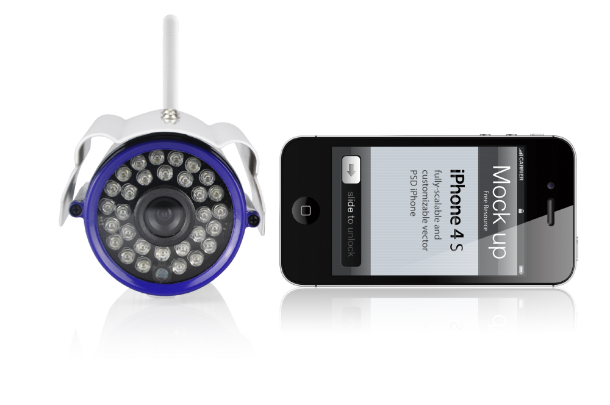
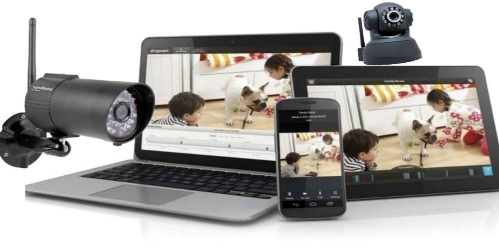

Burg King - Nazaré
Descrição do projeto
A Burg King é uma rede de hambúrgueres que possui franquias em todo o mundo. Em Belém-PA, trabalhei na franquia de Nazaré, realizando o cabeamento e as intalações das cameras CFTV - digitais, montagem da infraestrutura.
O projeto consistiu na implantação de um sistemas moderno de monitoramento digital, já que o prédio não possuia esse sistema.
O principal objetivo do sistemas é captar imagens digitais durante 24 horas.Onde os dados ficarão disponíveis em um HD interno no DVR(gravador). Dessa forma, o estabelecimento priorizará a segurança dos clientes e funcionários captando qualquer movimento no local. Onde somente o Gerente terá acesso as imagens através de tablet, Smartfhone e Notebook.
← Voltar